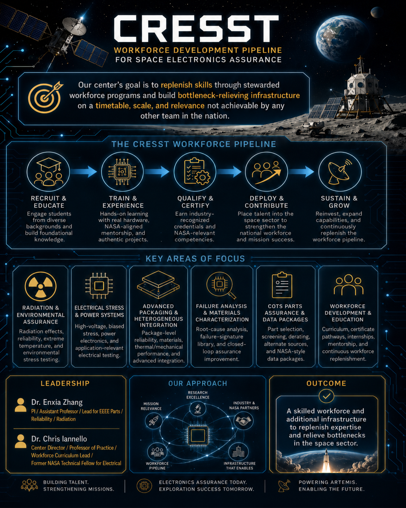

Education & Workforce
The Space U workforce pathway.
CRESST replenishes the space-electronics workforce through stewarded programs: credentialed coursework, hands-on radiation and failure-analysis work, and placement into the national supply chain.

Education & Workforce
CRESST replenishes the space-electronics workforce through stewarded programs: credentialed coursework, hands-on radiation and failure-analysis work, and placement into the national supply chain.
Our goal is to replenish skills through stewarded workforce programs and build bottleneck-relieving infrastructure on a timetable, scale, and relevance no other program can match.
What Is Funded
Workforce line items carried in the draft two-year budget.

Students move through the same instruments industry partners use: proton and laser test campaigns, decapsulation and cross-sectioning, curve tracing, and NASA-style data-package authorship.